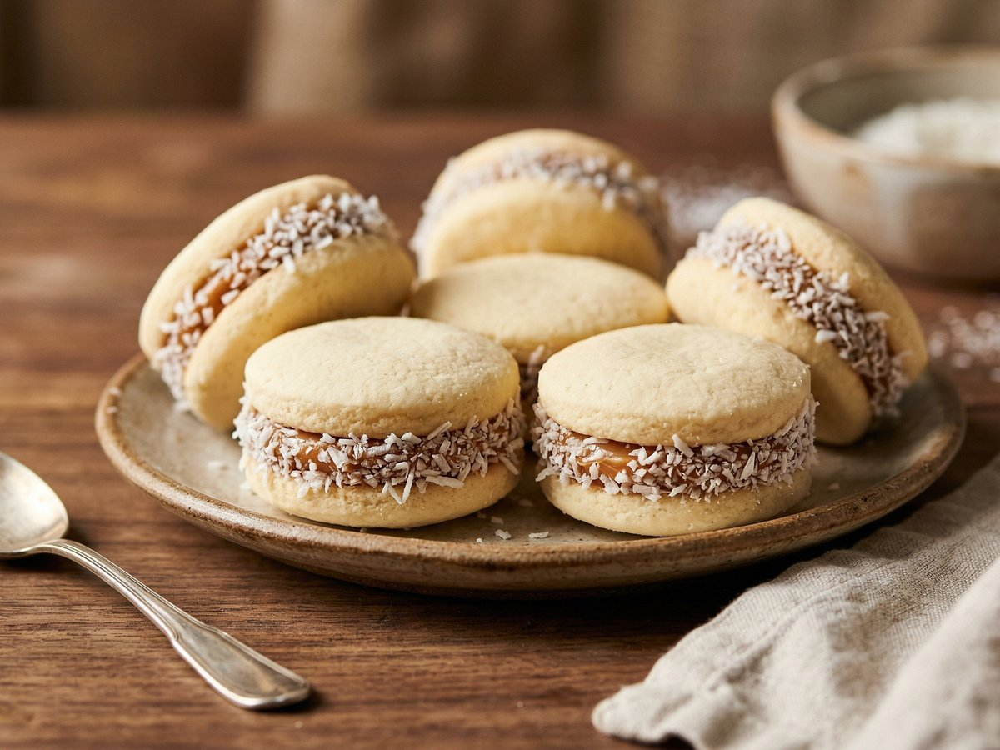
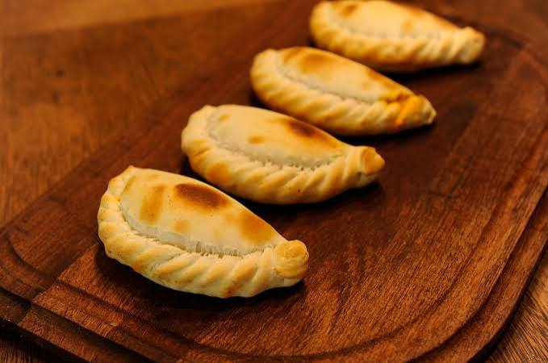
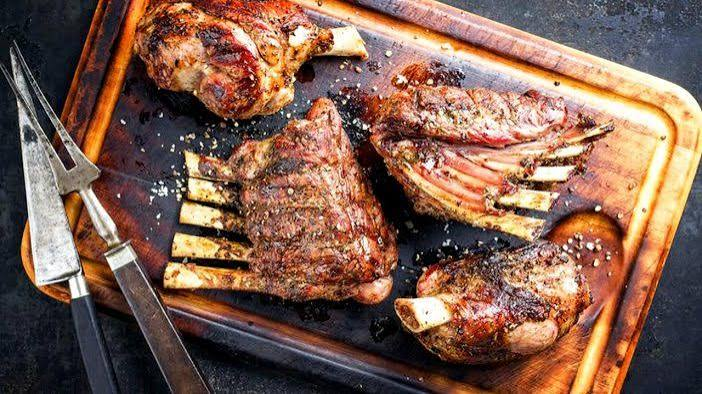

Dulzura cordobesa en cada bocado
1 h 30 min
~15 unidades
Tres recetas que cuentan la historia de nuestra tierra

Dulzura cordobesa en cada bocado

El sabor agridulce que distingue a Córdoba

Tradición serrana a fuego lento